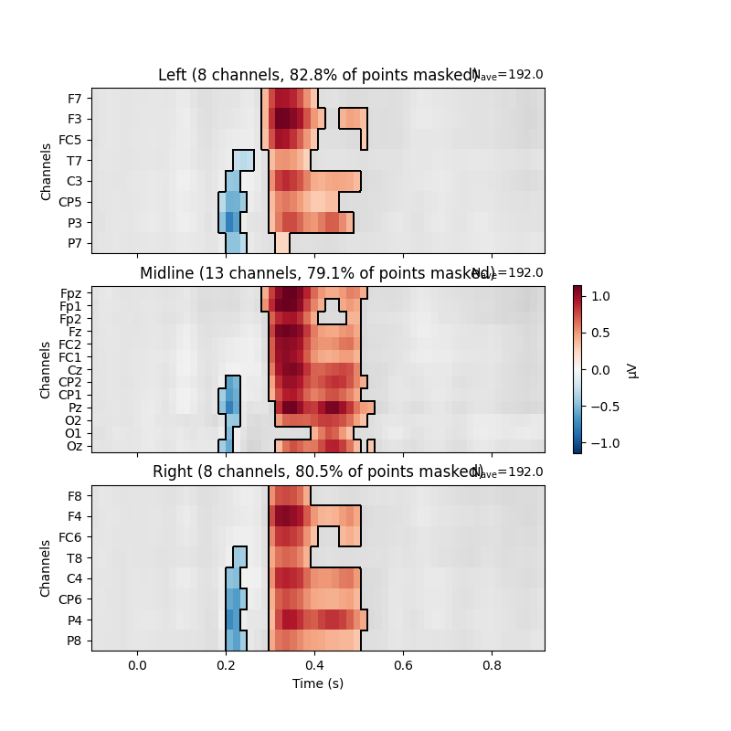

Note
Click here to download the full example code
Visualising statistical significance thresholds on EEG data¶
MNE-Python provides a range of tools for statistical hypothesis testing and the visualisation of the results. Here, we show a few options for exploratory and confirmatory tests - e.g., targeted t-tests, cluster-based permutation approaches (here with Threshold-Free Cluster Enhancement); and how to visualise the results.
The underlying data comes from 1; we contrast long vs. short words. TFCE is described in 2.
import numpy as np
import matplotlib.pyplot as plt
from scipy.stats import ttest_ind
import mne
from mne.channels import find_ch_adjacency, make_1020_channel_selections
from mne.stats import spatio_temporal_cluster_test
np.random.seed(0)
# Load the data
path = mne.datasets.kiloword.data_path() + '/kword_metadata-epo.fif'
epochs = mne.read_epochs(path)
name = "NumberOfLetters"
# Split up the data by the median length in letters via the attached metadata
median_value = str(epochs.metadata[name].median())
long_words = epochs[name + " > " + median_value]
short_words = epochs[name + " < " + median_value]
Out:
Reading /home/circleci/mne_data/MNE-kiloword-data/kword_metadata-epo.fif ...
Isotrak not found
Found the data of interest:
t = -100.00 ... 920.00 ms
0 CTF compensation matrices available
Adding metadata with 8 columns
Replacing existing metadata with 8 columns
960 matching events found
No baseline correction applied
0 projection items activated
If we have a specific point in space and time we wish to test, it can be
convenient to convert the data into Pandas Dataframe format. In this case,
the mne.Epochs object has a convenient
mne.Epochs.to_data_frame() method, which returns a dataframe.
This dataframe can then be queried for specific time windows and sensors.
The extracted data can be submitted to standard statistical tests. Here,
we conduct t-tests on the difference between long and short words.
time_windows = ((.2, .25), (.35, .45))
elecs = ["Fz", "Cz", "Pz"]
index = ['condition', 'epoch', 'time']
# display the EEG data in Pandas format (first 5 rows)
print(epochs.to_data_frame(index=index)[elecs].head())
report = "{elec}, time: {tmin}-{tmax} s; t({df})={t_val:.3f}, p={p:.3f}"
print("\nTargeted statistical test results:")
for (tmin, tmax) in time_windows:
long_df = long_words.copy().crop(tmin, tmax).to_data_frame(index=index)
short_df = short_words.copy().crop(tmin, tmax).to_data_frame(index=index)
for elec in elecs:
# extract data
A = long_df[elec].groupby("condition").mean()
B = short_df[elec].groupby("condition").mean()
# conduct t test
t, p = ttest_ind(A, B)
# display results
format_dict = dict(elec=elec, tmin=tmin, tmax=tmax,
df=len(epochs.events) - 2, t_val=t, p=p)
print(report.format(**format_dict))
Out:
channel Fz ... Pz
condition epoch time ...
film 0 -100 0.421970 ... 0.398182
-96 0.453939 ... 0.222424
-92 0.465606 ... 0.018485
-88 0.468182 ... -0.173485
-84 0.483485 ... -0.312121
[5 rows x 3 columns]
Targeted statistical test results:
Fz, time: 0.2-0.25 s; t(958)=-0.572, p=0.568
Cz, time: 0.2-0.25 s; t(958)=-2.836, p=0.005
Pz, time: 0.2-0.25 s; t(958)=-3.938, p=0.000
Fz, time: 0.35-0.45 s; t(958)=5.192, p=0.000
Cz, time: 0.35-0.45 s; t(958)=5.555, p=0.000
Pz, time: 0.35-0.45 s; t(958)=6.353, p=0.000
Absent specific hypotheses, we can also conduct an exploratory mass-univariate analysis at all sensors and time points. This requires correcting for multiple tests. MNE offers various methods for this; amongst them, cluster-based permutation methods allow deriving power from the spatio-temoral correlation structure of the data. Here, we use TFCE.
# Calculate adjacency matrix between sensors from their locations
adjacency, _ = find_ch_adjacency(epochs.info, "eeg")
# Extract data: transpose because the cluster test requires channels to be last
# In this case, inference is done over items. In the same manner, we could
# also conduct the test over, e.g., subjects.
X = [long_words.get_data().transpose(0, 2, 1),
short_words.get_data().transpose(0, 2, 1)]
tfce = dict(start=.2, step=.2)
# Calculate statistical thresholds
t_obs, clusters, cluster_pv, h0 = spatio_temporal_cluster_test(
X, tfce, adjacency=adjacency,
n_permutations=100) # a more standard number would be 1000+
significant_points = cluster_pv.reshape(t_obs.shape).T < .05
print(str(significant_points.sum()) + " points selected by TFCE ...")
Out:
Could not find a adjacency matrix for the data. Computing adjacency based on Delaunay triangulations.
-- number of adjacent vertices : 29
stat_fun(H1): min=0.000000 max=81.298503
Running initial clustering
Using 406 thresholds from 0.20 to 81.20 for TFCE computation (h_power=2.00, e_power=0.50)
Found 7424 clusters
Permuting 99 times...
0%| | : 0/99 [00:00<?, ?it/s]
1%|1 | : 1/99 [00:00<00:52, 1.86it/s]
2%|2 | : 2/99 [00:00<00:38, 2.49it/s]
3%|3 | : 3/99 [00:01<00:36, 2.63it/s]
4%|4 | : 4/99 [00:01<00:36, 2.59it/s]
5%|5 | : 5/99 [00:02<00:39, 2.37it/s]
6%|6 | : 6/99 [00:02<00:41, 2.26it/s]
7%|7 | : 7/99 [00:03<00:40, 2.26it/s]
8%|8 | : 8/99 [00:03<00:38, 2.39it/s]
9%|9 | : 9/99 [00:03<00:36, 2.45it/s]
10%|# | : 10/99 [00:04<00:36, 2.43it/s]
11%|#1 | : 11/99 [00:04<00:34, 2.53it/s]
12%|#2 | : 12/99 [00:04<00:34, 2.54it/s]
13%|#3 | : 13/99 [00:05<00:33, 2.54it/s]
14%|#4 | : 14/99 [00:05<00:33, 2.53it/s]
15%|#5 | : 15/99 [00:06<00:35, 2.39it/s]
16%|#6 | : 16/99 [00:06<00:34, 2.38it/s]
17%|#7 | : 17/99 [00:07<00:33, 2.42it/s]
18%|#8 | : 18/99 [00:07<00:32, 2.49it/s]
19%|#9 | : 19/99 [00:07<00:32, 2.49it/s]
20%|## | : 20/99 [00:08<00:31, 2.49it/s]
21%|##1 | : 21/99 [00:08<00:32, 2.41it/s]
22%|##2 | : 22/99 [00:08<00:31, 2.45it/s]
23%|##3 | : 23/99 [00:09<00:31, 2.42it/s]
24%|##4 | : 24/99 [00:09<00:31, 2.39it/s]
25%|##5 | : 25/99 [00:10<00:30, 2.45it/s]
26%|##6 | : 26/99 [00:10<00:29, 2.48it/s]
27%|##7 | : 27/99 [00:11<00:29, 2.45it/s]
28%|##8 | : 28/99 [00:11<00:28, 2.50it/s]
29%|##9 | : 29/99 [00:11<00:28, 2.47it/s]
30%|### | : 30/99 [00:12<00:28, 2.46it/s]
31%|###1 | : 31/99 [00:12<00:27, 2.48it/s]
32%|###2 | : 32/99 [00:12<00:26, 2.54it/s]
33%|###3 | : 33/99 [00:13<00:25, 2.59it/s]
34%|###4 | : 34/99 [00:13<00:24, 2.62it/s]
35%|###5 | : 35/99 [00:13<00:24, 2.60it/s]
36%|###6 | : 36/99 [00:14<00:24, 2.62it/s]
37%|###7 | : 37/99 [00:14<00:23, 2.61it/s]
38%|###8 | : 38/99 [00:14<00:23, 2.60it/s]
39%|###9 | : 39/99 [00:15<00:23, 2.56it/s]
40%|#### | : 40/99 [00:15<00:23, 2.52it/s]
41%|####1 | : 41/99 [00:16<00:23, 2.50it/s]
42%|####2 | : 42/99 [00:16<00:22, 2.53it/s]
43%|####3 | : 43/99 [00:17<00:21, 2.55it/s]
44%|####4 | : 44/99 [00:17<00:21, 2.58it/s]
45%|####5 | : 45/99 [00:17<00:20, 2.58it/s]
46%|####6 | : 46/99 [00:18<00:20, 2.61it/s]
47%|####7 | : 47/99 [00:18<00:20, 2.57it/s]
48%|####8 | : 48/99 [00:19<00:20, 2.49it/s]
49%|####9 | : 49/99 [00:19<00:20, 2.46it/s]
51%|##### | : 50/99 [00:19<00:19, 2.50it/s]
52%|#####1 | : 51/99 [00:20<00:19, 2.51it/s]
53%|#####2 | : 52/99 [00:20<00:18, 2.53it/s]
54%|#####3 | : 53/99 [00:21<00:18, 2.53it/s]
55%|#####4 | : 54/99 [00:21<00:17, 2.51it/s]
56%|#####5 | : 55/99 [00:21<00:17, 2.55it/s]
57%|#####6 | : 56/99 [00:22<00:16, 2.54it/s]
58%|#####7 | : 57/99 [00:22<00:16, 2.47it/s]
59%|#####8 | : 58/99 [00:23<00:17, 2.38it/s]
60%|#####9 | : 59/99 [00:24<00:16, 2.36it/s]
61%|###### | : 60/99 [00:24<00:16, 2.40it/s]
62%|######1 | : 61/99 [00:24<00:15, 2.44it/s]
63%|######2 | : 62/99 [00:24<00:14, 2.47it/s]
64%|######3 | : 63/99 [00:25<00:14, 2.48it/s]
65%|######4 | : 64/99 [00:25<00:14, 2.48it/s]
66%|######5 | : 65/99 [00:25<00:13, 2.54it/s]
67%|######6 | : 66/99 [00:26<00:12, 2.55it/s]
68%|######7 | : 67/99 [00:26<00:12, 2.52it/s]
69%|######8 | : 68/99 [00:27<00:12, 2.56it/s]
70%|######9 | : 69/99 [00:27<00:11, 2.52it/s]
71%|####### | : 70/99 [00:28<00:11, 2.46it/s]
72%|#######1 | : 71/99 [00:28<00:11, 2.43it/s]
73%|#######2 | : 72/99 [00:29<00:11, 2.39it/s]
74%|#######3 | : 73/99 [00:29<00:10, 2.38it/s]
75%|#######4 | : 74/99 [00:30<00:10, 2.37it/s]
76%|#######5 | : 75/99 [00:30<00:10, 2.38it/s]
77%|#######6 | : 76/99 [00:31<00:09, 2.33it/s]
78%|#######7 | : 77/99 [00:31<00:09, 2.35it/s]
79%|#######8 | : 78/99 [00:31<00:09, 2.32it/s]
80%|#######9 | : 79/99 [00:32<00:08, 2.32it/s]
81%|######## | : 80/99 [00:32<00:08, 2.31it/s]
82%|########1 | : 81/99 [00:33<00:07, 2.32it/s]
83%|########2 | : 82/99 [00:33<00:07, 2.36it/s]
84%|########3 | : 83/99 [00:33<00:06, 2.38it/s]
85%|########4 | : 84/99 [00:34<00:06, 2.39it/s]
86%|########5 | : 85/99 [00:34<00:05, 2.42it/s]
87%|########6 | : 86/99 [00:35<00:05, 2.39it/s]
88%|########7 | : 87/99 [00:35<00:05, 2.39it/s]
89%|########8 | : 88/99 [00:35<00:04, 2.41it/s]
90%|########9 | : 89/99 [00:36<00:04, 2.41it/s]
91%|######### | : 90/99 [00:36<00:03, 2.45it/s]
92%|#########1| : 91/99 [00:36<00:03, 2.48it/s]
93%|#########2| : 92/99 [00:37<00:02, 2.46it/s]
94%|#########3| : 93/99 [00:38<00:02, 2.38it/s]
95%|#########4| : 94/99 [00:38<00:02, 2.40it/s]
96%|#########5| : 95/99 [00:38<00:01, 2.45it/s]
97%|#########6| : 96/99 [00:39<00:01, 2.45it/s]
98%|#########7| : 97/99 [00:39<00:00, 2.50it/s]
99%|#########8| : 98/99 [00:39<00:00, 2.53it/s]
100%|##########| : 99/99 [00:39<00:00, 2.56it/s]
100%|##########| : 99/99 [00:39<00:00, 2.48it/s]
Computing cluster p-values
Done.
1433 points selected by TFCE ...
The results of these mass univariate analyses can be visualised by plotting
mne.Evoked objects as images (via mne.Evoked.plot_image)
and masking points for significance.
Here, we group channels by Regions of Interest to facilitate localising
effects on the head.
# We need an evoked object to plot the image to be masked
evoked = mne.combine_evoked([long_words.average(), short_words.average()],
weights=[1, -1]) # calculate difference wave
time_unit = dict(time_unit="s")
evoked.plot_joint(title="Long vs. short words", ts_args=time_unit,
topomap_args=time_unit) # show difference wave
# Create ROIs by checking channel labels
selections = make_1020_channel_selections(evoked.info, midline="12z")
# Visualize the results
fig, axes = plt.subplots(nrows=3, figsize=(8, 8))
axes = {sel: ax for sel, ax in zip(selections, axes.ravel())}
evoked.plot_image(axes=axes, group_by=selections, colorbar=False, show=False,
mask=significant_points, show_names="all", titles=None,
**time_unit)
plt.colorbar(axes["Left"].images[-1], ax=list(axes.values()), shrink=.3,
label="µV")
plt.show()
- 
Out:
No projector specified for this dataset. Please consider the method self.add_proj.
References¶
- 1
Stéphane Dufau, Jonathan Grainger, Katherine J. Midgley, and Phillip J. Holcomb. A thousand words are worth a picture: snapshots of printed-word processing in an event-related potential megastudy. Psychological Science, 26(12):1887–1897, 2015. doi:10.1177/0956797615603934.
- 2
Stephen M. Smith and Thomas E. Nichols. Threshold-free cluster enhancement: addressing problems of smoothing, threshold dependence and localisation in cluster inference. NeuroImage, 44(1):83–98, 2009. doi:10.1016/j.neuroimage.2008.03.061.
Total running time of the script: ( 0 minutes 47.830 seconds)
Estimated memory usage: 117 MB